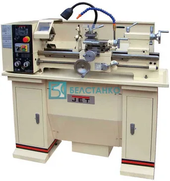
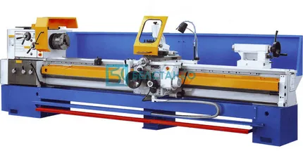
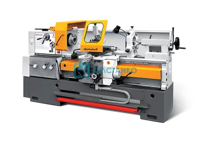
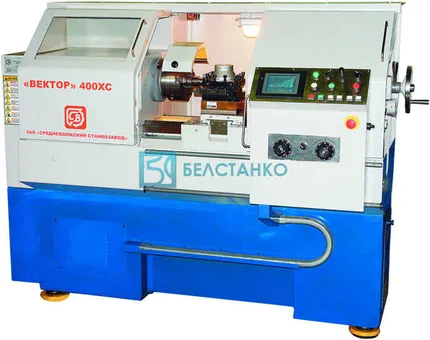
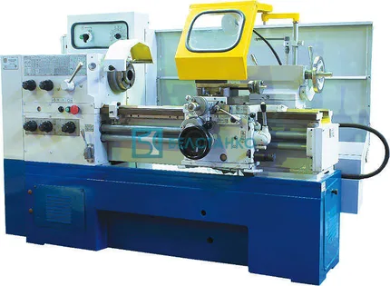

1К625Д-1500
Станок токарно-винторезный
3 120 000 ₽Станок токарно-винторезный
3 120 000 ₽



Станок токарный
208 000 ₽
Станок токарный
Цена по запросу
Токарно-винторезный станок
2 124 000 ₽
Токарно-винторезный станок
2 250 000 ₽



Универсальный токарный станок
2 082 500 ₽
Станок настольный токарный
142 425 ₽
Станок настольный токарный
134 160 ₽

Станок токарно-винторезный (Samat 400, Samat-400)
Цена по запросуСтанок токарно-винторезный (Samat 400, Samat-400)
Цена по запросу